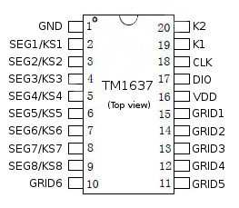
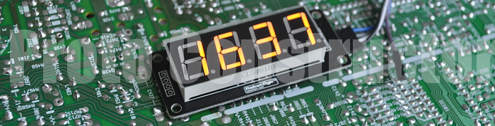
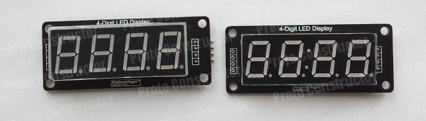
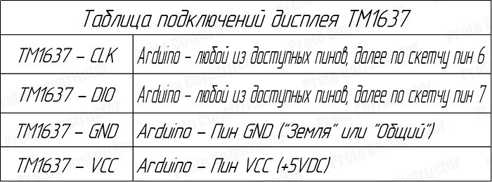
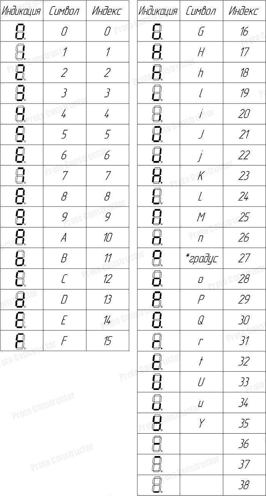
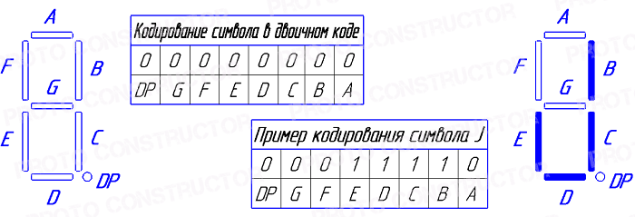

Дисплеи на базе драйвера TM1637 - изучаем возможности
Информация о материале
Категория: Дисплеи(Displays)
Опубликовано: 01 мая 2018
Просмотров: 17290

В предыдущей статье, нами было рассмотрено подключение и тест дисплея на базе драйвера TM1637. Тест проходил в формате платы Arduino Rich Uno, и в данном случае, рассматриваемый дисплей уже был смонтирован на данной плате. Не будет лишним рассмотреть и протестировать такие дисплеи в виде отдельных модулей, что ж начнём...
1. Первый шаг к освоению дисплеев TM1637
На фото ниже, можно видеть два дисплейных модуля, с виду вроде бы одинаковые, но, есть существенные отличия. Если присмотреться, то отличает их наличие разделительных точек - десятичной и разделителя двоеточие. Что еще можно сказать про них? Логически нетрудно прийти к выводу, что один вид дисплея(с десятичным разделителем) можно использовать для индикации каких либо точных величин, к примеру температура или уровень жидкости. Второй же вид дисплея (с разделителем двоеточие), конечно же удобно использовать в качестве индикации времени.

Как подключить данный модуль дисплея к плате Arduino? Это не составит особого труда, если придерживаться нижеследующей таблицы подключений. Модуль дисплея имеет на борту четыре пина подключения, это VCC(+5V), GND, CLK(Пин тактирования), DIO(Пин данных). Подключать питание нужно конечно же на пины VCC и GND, желательно избегать переполюсовки, можеть быть и есть защита от подачи неправильного питания, но всё же лучше не рисковать. Пины CLK и DIO можно подключать на любые пины платы Arduino, самое главное, скачать и подключить библиотеку TM1637, и указать в скетче используемые пины подключения.

Ну что же, пришло время испытать дисплей, первым делом можно попробовать управлять разделителем двоеточие, скетч ниже с этим прекрасно справится, если что то непонятно, то в скетче предусмотрены комментарии. Чтобы испытать дисплей, можно скопировать данный скетч прямо из окна браузера в среду разработки Arduino IDE.
/*Подключаем библиотеку*/
#include "TM1637.h"
/*Определяем пины подключения*/
#define CLK 6
#define DIO 7
/*
Создаём объект tm1637 класса TM1637, в качестве
параметров передаём номера пинов подключения
*/
TM1637 tm1637(CLK, DIO);
/*Выводимый на дисплей массив*/
int8_t StringToDisp[] = {1, 2, 3, 4};
void setup()
{
/*Инициализация дисплея*/
tm1637.init();
/*Устанавливаем яркость свечения дисплея*/
/*BRIGHT_TYPICAL - нормальная яркость*/
/*BRIGHT_DARKEST - затемнённый дисплей*/
/*BRIGHTEST - яркий дисплей*/
tm1637.set(BRIGHT_TYPICAL);
}
void loop()
{
/*Задание на включение разделителя*/
tm1637.point(true);
/*Вывод чисел массива на дисплей*/
tm1637.display(StringToDisp);
/*Пауза*/
delay(1000);
/*Задание на выключение разделителя*/
tm1637.point(false);
/*Вывод чисел массива на дисплей*/
tm1637.display(StringToDisp);
/*Пауза*/
delay(1000);
}
На втором этапе, можно попробовать управлять десятичной точкой на дисплее с десятичным разделителем. Второй пример скетча также прокомментирован для более удобного понимания его работы. В данном случае изменён код только в функции loop(), глобальные переменные, объявления классов и функция setup() остались без изменений.
void loop()
{
/*В данном случае, чтобы управлять десятичной точкой */
/*нужно явно указывать в каком знакоместе её включать*/
/*0-е знакоместо, точка погашена*/
tm1637.point(false);
tm1637.display(0, StringToDisp[0]);
/*1-е знакоместо, точка погашена*/
tm1637.point(false);
tm1637.display(1, StringToDisp[1]);
/*Задание на включение десятичной точки во втором по */
/*счету знакоместе дисплея*/
tm1637.point(true);
tm1637.display(2, StringToDisp[2]);
/*3-е знакоместо, точка погашена*/
tm1637.point(false);
tm1637.display(3, StringToDisp[3]);
}
Как работают эти примеры, вы можете увидеть посмотрев обзорное видео, оно находится в самом конце статьи.
2. Генерация пользовательских символов для дисплеев TM1637
Отдельной темой, которая должна(!) быть рассмотрена, является генерация пользовательских символов для дисплеев данного типа. На сайте уже есть статьи про похожие дисплеи, работающие на базе драйвера MAX7219. Что можно выжать из таких дисплеев, и как генерировать символы используя функции библиотеки LedControl.h вы можете ознакомиться из нижеследующих статей, если пройдёте по ссылкам:
Прочитав данные статьи, можно убедиться, что разработчики библиотек для дисплеев MAX7219 тщательно постарались реализовать функции генерации пользовательских символов. К сожалению, библиотека для работы с дисплеями TM1637 не содержит в себе аналогичных функций, и поэтому, чтобы сгенерировать какой либо символ нужно модифицировать библиотечный файл TM1637.CPP, исходя из этого, у нас есть два пути. В первом случае, автором статьи уже был изменён файл TM1637.CPP, добавлены различные коды символов. Этот файл можно скачать по следующей ссылке здесь, далее его нужно распаковать и скопировать, пройти по следующему пути "C:\Users\*Имя вашего компьютера либо учетной записи*\Documents\Arduino\libraries\tm1637", вставить и заменить. В нижеследующей таблице, можно видеть какие коды символов уже содержались(левая часть таблицы), и какие были добавлены(правая часть таблицы) в данный файл.

Чтобы испытать модифицированный и дополненный библиотечный файл TM1637.CPP, попробуем вывести некоторые "символьные" сообщения на дисплей. В нижеследующем скетче, поочерёдно выводятся сообщения SEGA, LEGO, HEAT, init, STOP. Теперь, вывести такие сообщения не составит особого труда, формируя массив из четырех элементов, и инициализируя его порядковыми индексами символов из таблицы, можно составлять самые различные "символьные" сообщения для дисплеев TM1637. Итак, скетч:
/*Подключаем библиотеку*/
#include "TM1637.h"
/*Определяем пины подключения*/
#define CLK 6
#define DIO 7
/*
Создаём объект tm1637 класса TM1637, в качестве
параметров передаём номера пинов подключения
*/
TM1637 tm1637(CLK, DIO);
/*Выводимые на дисплей массивы*/
int8_t Sega[] = {5, 14, 16, 10};
int8_t Lego[] = {24, 14, 16, 0};
int8_t Heat[] = {17, 14, 10, 32};
int8_t Init[] = {20, 26, 20, 32};
int8_t Stop[] = {5, 32, 0, 29};
void setup()
{
/*Инициализация дисплея*/
tm1637.init();
/*Устанавливаем яркость свечения дисплея*/
/*BRIGHT_TYPICAL - нормальная яркость*/
/*BRIGHT_DARKEST - затемнённый дисплей*/
/*BRIGHTEST - яркий дисплей*/
tm1637.set(BRIGHT_TYPICAL);
}
void loop()
{
/*Сразу же гасим десятичную точку для всех знакомест*/
tm1637.point(false);
/*Вывод "сообщений" на дисплей, период смены 2 сек*/
tm1637.display(Sega);
delay(2000);
tm1637.display(Lego);
delay(2000);
tm1637.display(Heat);
delay(2000);
tm1637.display(Init);
delay(2000);
tm1637.display(Stop);
delay(2000);
}
Ну что же, в первом случае можно в общем то не особо напрягаться с генерацией пользовательских символов. Достаточно заменить файл и пользоваться готовыми кодами символов из таблицы. А что если всё же хочется самостоятельно модифицировать файл TM1637.CPP и добавить свои коды символов? Тогда идем по пути в директорию:
C:\Users\*Имя вашего компьютера либо учетной записи*\Documents\Arduino\libraries\tm1637
Находим файл TM1637.CPP, желательно сохранить его резервную копию, перед тем как что то делать, ну так, на случай. Открываем файл TM1637.CPP текстовым редактором и ищем вот эту строку:
static int8_t TubeTab[] = {0x3f,0x06,0x5b,0x4f,0x66,0x6d,0x7d,0x07,0x7f,0x6f,0x77,0x7c,0x39,0x5e,0x79,0x71}
Массив TubeTab содержит в себе 16 байт, в каждом из них закодирована одна из цифр последовательности от 0 до 15. Нужно конечно учитывать, что цифры от 0 до 9 закодированы в виде обычных цифр, а цифры от 10 до 15 закодированы в виде символов A, B, C, D, E, F. И соответственно на дисплей они будут выводиться в шестнадцатиричном формате от 0 до 9 и от A до F. Сам массив не имеет фиксированного размера, поэтому в него можно добавлять свои байты, хранящие в себе закодированный символ. Сгенерировать тот или иной символ, можно руководствуясь нижеследующей таблицей. После получения двоичного кода символа, используя обычный калькулятор операционной системы Windows можно перевести полученное значение в шестнадцатиричный формат, к примеру:
Символ J в двоичном представлении -> b00011110
Символ J в шестнадцатиричном представлении -> 0x1E

Далее просто дополняем массив TubeTab полученным значением.
3. А что если... ? Подключение двух дисплеев TM1637 к плате Arduino
Ну и напоследок, скетч демонстрирующий одновременное подключение двух дисплеев к плате Arduino. За основу возьмем следующее условие - на дисплей с разделителем в виде десятичной точки будет индицироваться температура, а на дисплей с часовым разделителем значение текущего времени. Время и температура будут так сказать чисто условными значениями, главная задача - показать возможности подключения одновременно двух дисплеев. Приведённый скетч при желании можно дополнить и расширить, внеся свои необходимые вычисления и подключив нужное оборудование.
/*Подключаем библиотеку*/
#include "TM1637.h"
/*Определяем пины подключения для дисплея*/
/*с десятичной точкой в качестве разделителя*/
#define DISP1_CLK 6
#define DISP1_DIO 7
/*Определяем пины подключения для дисплея*/
/*с часовым разделителем двоеточие*/
#define DISP2_CLK 8
#define DISP2_DIO 9
/*
Создаём два объекта класса TM1637, в качестве
параметров передаём номера пинов подключения
Первый дисплей для индикации температуры
*/
TM1637 TempDisplay(DISP1_CLK, DISP1_DIO);
/*Второй дисплей для индикации времени*/
TM1637 TimeDisplay(DISP2_CLK, DISP2_DIO);
/*Выводимые на дисплеи массивы*/
int8_t Time[] = {1, 2, 2, 0};
int8_t Temp[] = {2, 6, 27, 12};
void setup()
{
/*Инициализация дисплеев*/
TempDisplay.init();
TimeDisplay.init();
/*Устанавливаем яркость свечения дисплеев*/
/*BRIGHT_TYPICAL - нормальная яркость*/
/*BRIGHT_DARKEST - затемнённый дисплей*/
/*BRIGHTEST - яркий дисплей*/
TempDisplay.set(BRIGHT_TYPICAL);
TimeDisplay.set(BRIGHT_TYPICAL);
}
void loop()
{
/*Сразу же гасим десятичную точку для всех знакомест*/
TempDisplay.point(false);
/*Вывод значения температуры на дисплей с десятичной точкой*/
TempDisplay.display(Temp);
/*Выводим значение времени на дисплей с разделителем двоеточие*/
/*Также управляем зажиганием и гашением разделителя двоеточие*/
TimeDisplay.point(false);
TimeDisplay.display(Time);
delay(1000);
TimeDisplay.point(true);
TimeDisplay.display(Time);
delay(1000);
}
�